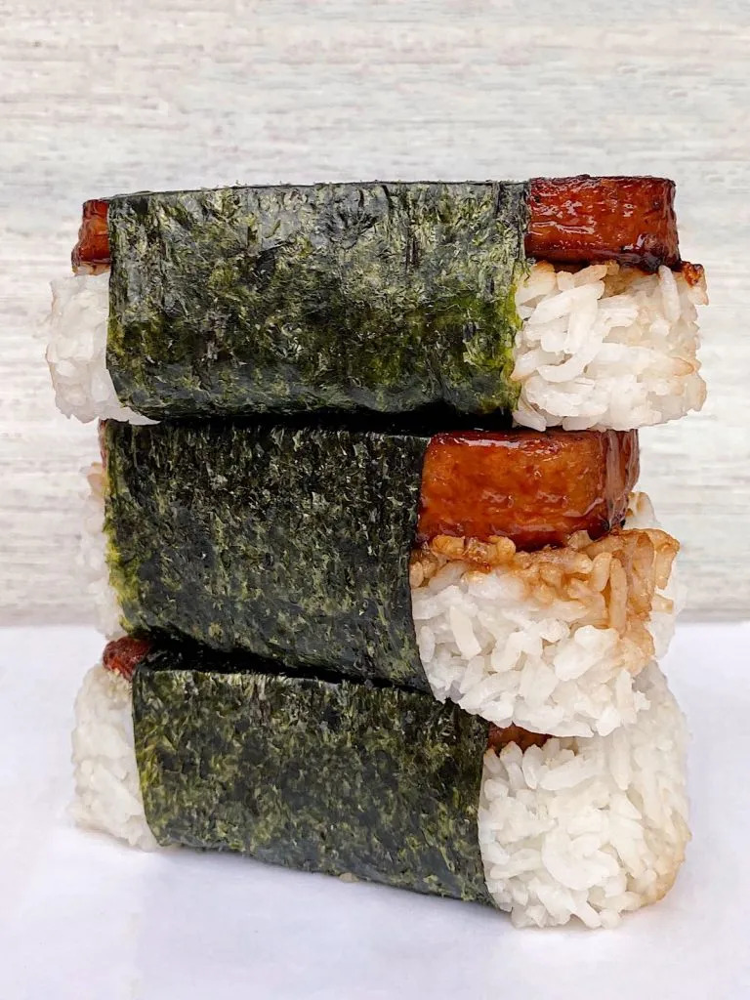

Spam Musubi

Glazed Spam with rice wrapped in nori
Ingredients
- Spam
- Shoyu
- Mirin
- Sugar
- Rice
- Nori
- Furikake
Steps
- Cut spam into 6 even slices.
- Fry spam on medium heat until crispy.
- Mix together shoyu, mirin, Sugar.
- Turn heat to low and pour glaze onto spam.
- Use about 2/3 cups of cooked rice per spam musubi and mold rice into shape.
- Pour furikake onto top of molded rice.
- Place one slice of spam onto the molded rice.
- Wrap nori around spam and rice.
- Repeat steps 5 through 8 for each slice of spam.